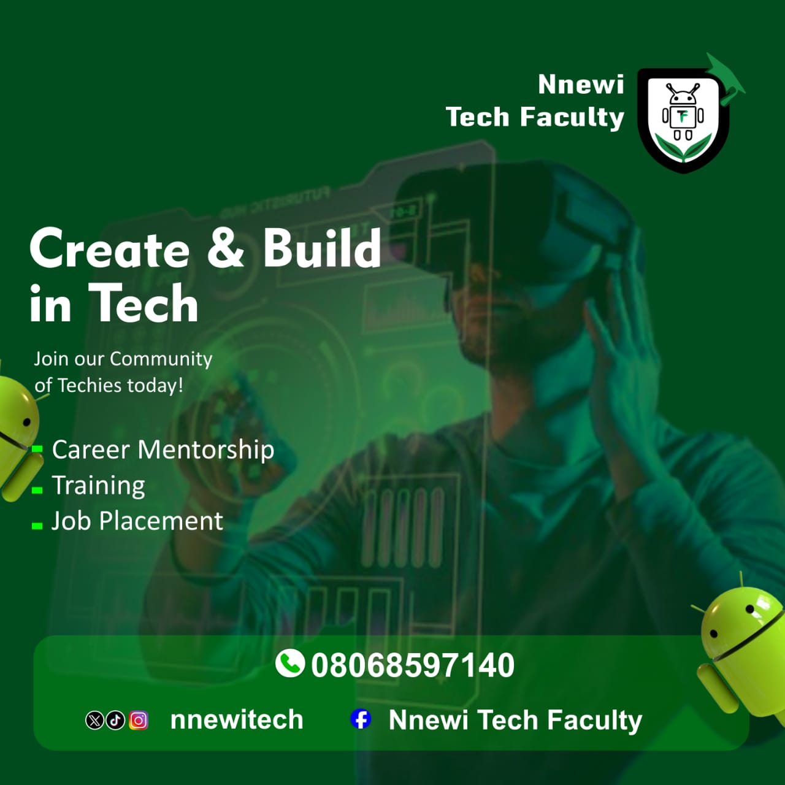
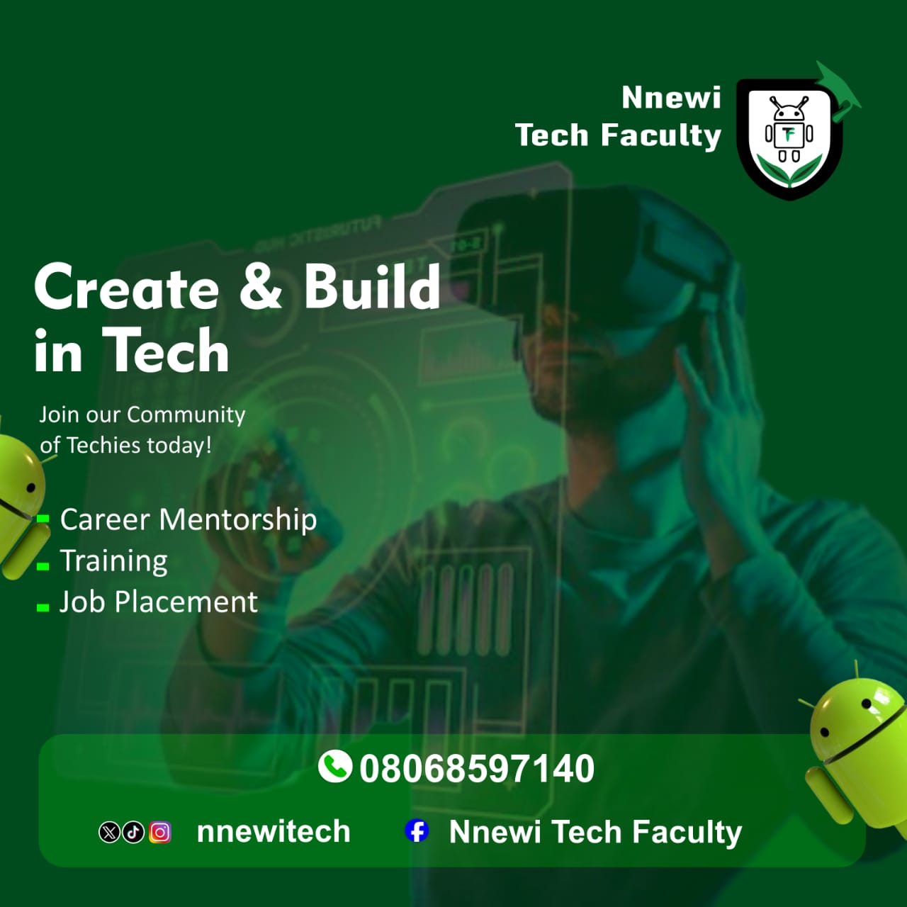
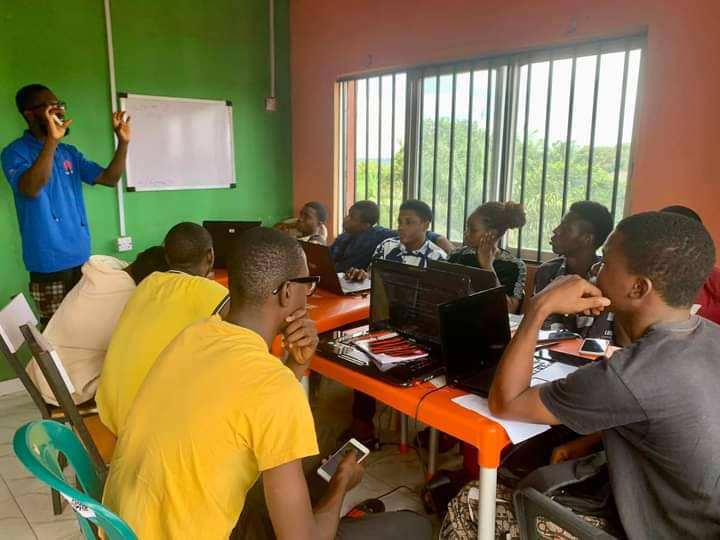
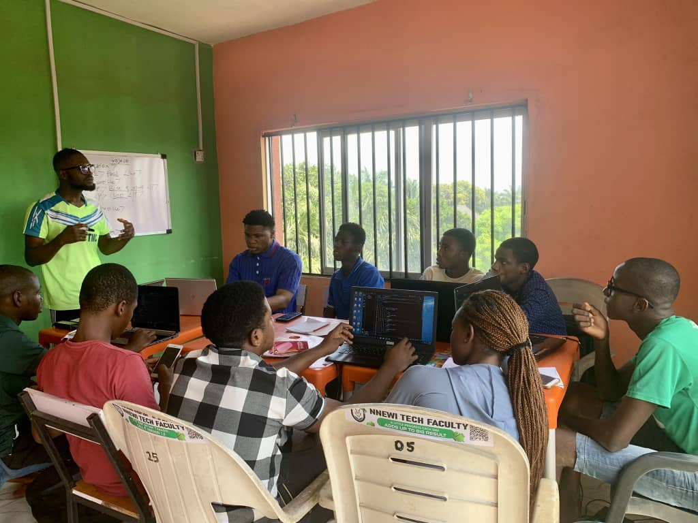
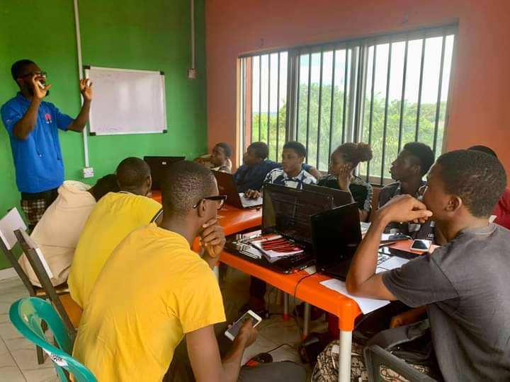
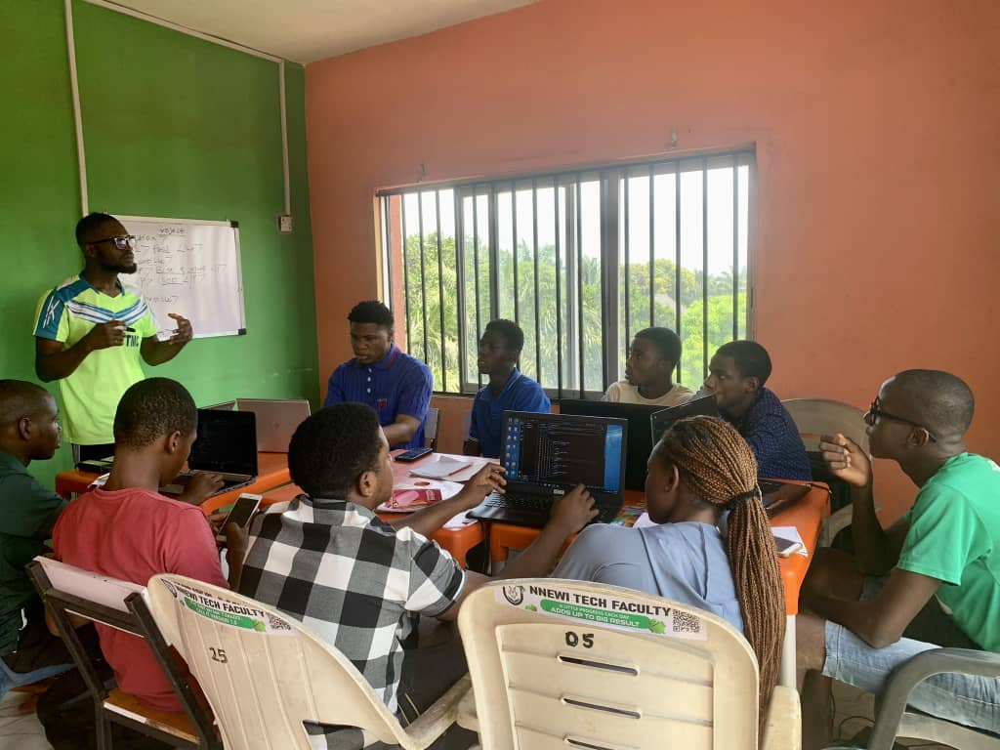

Nestled in the bustling town of Nnewi in Anambra State, often hailed as the
industrial hub of Nigeria,
Nnewi Tech Faculty stands as a beacon of hope, empowerment, and innovation.
Since its inception, the institution has been transformed into a nurturing ground for young talents, inspiring
the next generation of tech enthusiasts, innovators, and entrepreneurs. This piece delves into the story of
Nnewi Tech Faculty,
its mission, its impact, and its vision for a bright future.
Empowering Technology for Societal Good.
In a world where opportunities often hinge on access to quality education,
Nnewi Tech Faculty provides a platform for young minds to bridge the gap between
potential and opportunity. By offering free and subsidized courses,the faculty ensures that financial
limitations do not hinder ambition.
Course Tracks
Nnewi Tech Faculty boasts a dynamic curriculum tailored to meet the evolving demands of the tech industry.
At its core, the institution focuses on practical, hands-on training that equips students with job-ready
skills. Among the most popular programs are Web Development, Mobile App Development, Cloud Computing, Data Analysis and Cybersecurity.
These courses are taught by seasoned professionals who combine technical expertise with a passion for
mentorship.
One standout feature of the curriculum is its focus on real-world problem-solving. Students are encouraged
to work on projects that address societal challenges, fostering a sense of responsibility and innovation.
Each project involves students' collaboration, research and creativity inorder to consolidate learnings
in class
Instead of a series of coding challenges,
the students are exposed to real world problems that will improve their curiosity, research ability, team
spirit and ability to think critically.
challenges are given to develop the students' ability to work independently as well as the ability to work
in a team,
They'll get that sense of forward progress right from the beginning.
And Nnewi Tech Faculty will be a much smoother experience.
A Brief History
Of Nnewi Tech Faculty
Year 2021
Nnewi Tech Faculty was launched as the first tech bootcamp in Nnewi community with the
mission of helping people learn and improve their tech skills in the modern era. It started with just
two
courses: Cybersecurity and Mobile App Development.
Year 2022
Two course tracks were added to the faculty namely: Web development and Graphics Design together with
a milestone celebration of 500 students.
Year 2023
Data Science, Cloud Computing and AI/Machine Learning course tracks were added to the courses taught at
the faculty
with a milestone celebration of 1000 students
Year 2024
Online learning was introduced for ease of learning and a milestone of 2000 students achieved.
We Are On A Mission To Empower
Nnewi Tech Faculty was founded on the belief that technology is the great equalizer of our time.
Its mission is simple yet profound: to empower high school graduates and young adults with technical
skills and knowledge that will enable them to thrive in the digital economy.
The institution is driven by the understanding that technology is not
merely a tool but a transformative force capable of solving pressing societal challenges.

 

 


